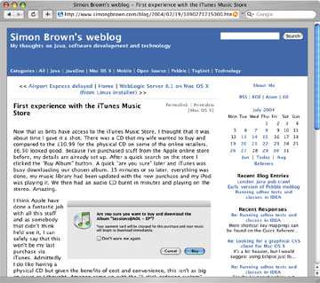
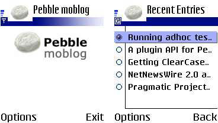

|  |
|

|
| Pebble weblog | Pebble deskblog | |
|  |
|
Post to your Blogger/MetaWeblog API compatible blog from Ant.
<blogger.newPost
url="http://localhost:8080/blog/xmlrpc"
blogid="test"
username="simon"
password="password"
title="Build status"
content="${content}"
category="build" /> |
| Pebble moblog | Pebble antblog | |
| Project page | Download | Changelog | Bugs and Issues | Powered by Pebble | ||
| What is Pebble? |
|
Pebble provides lightweight, open source, blogging tools that are written in Java.
This is the documentation set for Pebble 1.6-beta1 - please see the Pebble website for updates. |
|
|